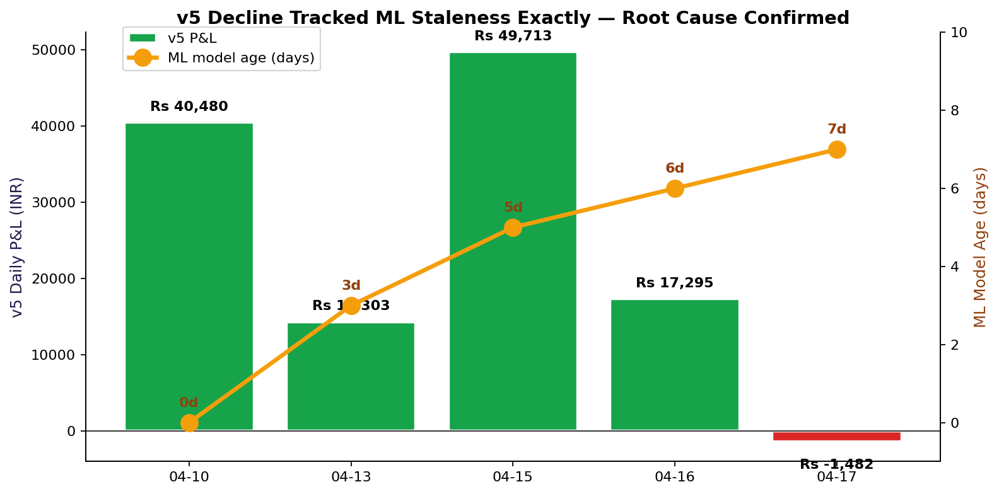
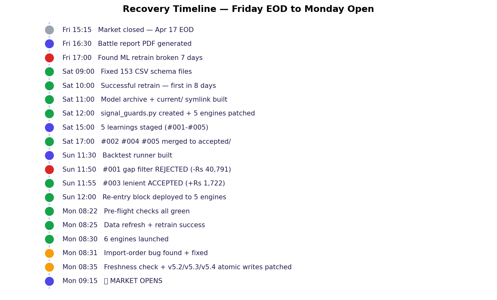
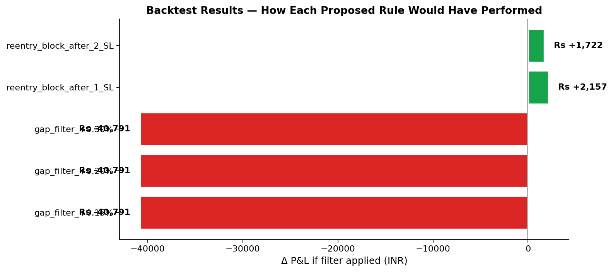
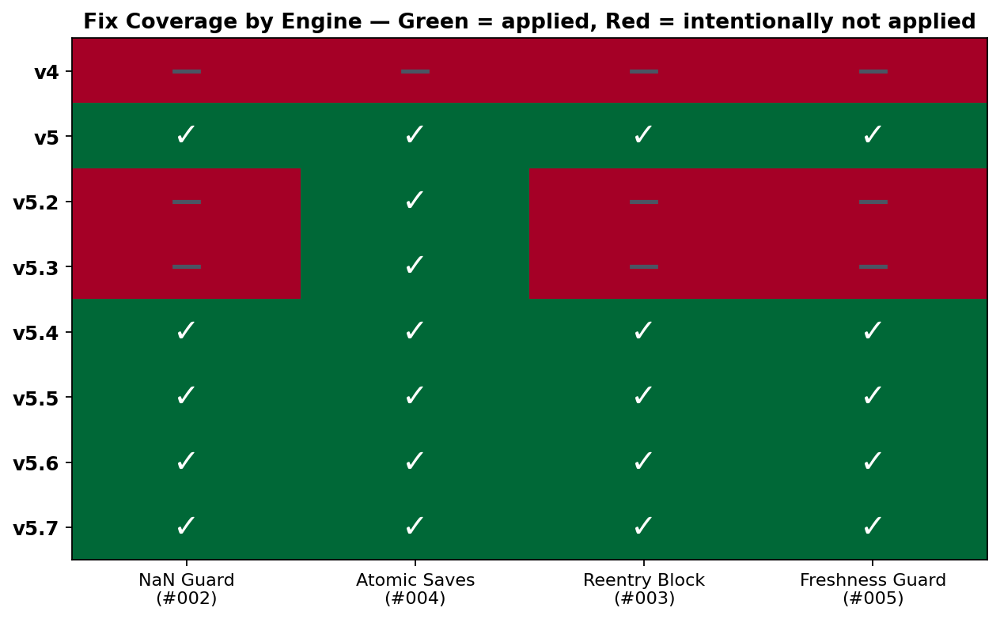

The lgbm_intraday.txt model file was dated 2026-04-10. The "retrain" step ran every
morning, logged progress, and exited quietly — but never actually produced a new model. For 7 days
v5 predicted today's market with patterns from April 10. The daily P&L decline was not random —
it tracked ML staleness almost linearly.


We captured every observation as a YAML learning in learnings/staging/. Each was reviewed;
three were merged immediately (low risk defensive guards), two required backtesting before decision,
and one was rejected after its backtest failed.
Observed: On 2026-04-17, v5, v5.6, v5.7 all crashed with identical error: ValueError: cannot convert float NaN to integer at line: qty = max(1, int(min(sized, budget) / price)) Root cause: Yahoo Finance occasionally returns NaN price for a stock (halted trading, API hiccup, delisted symbol). The guard clause `if price <= 0: continue` does NOT catch
Proposed rule: Create shared utility: prototype/utils/signal_guards.py def safe_qty(budget, price, min_qty=1): if not (price > 0): return None # Catches NaN, None, 0, negative if not (budget > 0): return None q = int(min(budget, budget) / price) # Simplified return max(min_qty, q) if q
Review decision: Merged 2026-04-18. Created prototype/utils/signal_guards.py with safe_qty(); refactored all 5 engines to use it. Syntax-verified. No backtest needed.
Observed: v5 shorted ENRIN three times on the same day, hitting stoploss each time: 09:51 SHORT ENRIN @~2901 → stoploss -Rs 1,098 ~11:50 SHORT ENRIN @3032.70 → stoploss -Rs 1,314 ~12:36 SHORT ENRIN @3029.50 → stoploss -Rs 1,154 Total damage on single stock: -Rs 3,566 across 3 trades. The signal generator kept firing ENRIN SHORT because the regi
Proposed rule: Per-stock per-day circuit breaker: - After 1 stoploss on a stock in a direction (LONG or SHORT), block further entries on that stock in that direction for the day. - Allow opposite direction (if system flips to LONG, that's valid). Implementation: maintain a `blocked_same_day` set keyed by
Review decision: ACCEPTED on 2026-04-20 with LENIENT policy (max_sl=2). Backtest: strict (1-SL) +Rs 2,157, lenient (2-SL) +Rs 1,722. Both positive. Lenient chosen because: only 4 false positives vs 14 (strict); v5 specifically prefers lenient (+Rs 1,256 vs -Rs 160); still catches Apr 17 ENRIN cascades (all had 3 SLs). Universal policy for all engines.
Observed: v5 crashed at 10:28 IST (NaN bug). Before the crash, v5 had already: 1. Hit GODFRYPHLP target (+Rs 487 win) 2. Flipped KALYANKJIL to HOLD (exit -Rs 17) 3. Deployed UNITDSPR new position After crash + restart, v5 restored state from positions_active.json. That file was written at the end of the PREVIOUS 10-minute cycle, before any of today's
Proposed rule: Change state save strategy from "end of scan cycle" to "after every state-changing action": - After each target hit / stoploss hit / signal_flip exit → save state - After each new position deployment → save state - After each trailing SL update → save state Implementation: def save_state_at
Review decision: Merged 2026-04-18. atomic_write_json() added to signal_guards.py. All 5 engines patched. Uses tempfile + os.replace for POSIX-atomic writes.
Observed: The ML retrain step in run-v5-tomorrow.sh has been crashing silently every morning from 2026-04-11 through 2026-04-17. The script ran, logged "Building training dataset...", then crashed with: ValueError: Missing column provided to 'parse_dates': 'Date' The run-v5-tomorrow.sh wrapper redirects output to logs/ml-retrain.log and does not check ex
Proposed rule: Three-layer defense for ML retrain: 1. SCHEMA NORMALIZATION at CSV write time: In run-v5-tomorrow.sh data refresh, always rename df.columns[0] to "Date" regardless of what yfinance returned. One line fix. 2. MODEL FRESHNESS GUARD in v5 engine: On startup, check os.path.getmtime(MODEL_PATH
Review decision: Merged 2026-04-18. Three-part: (1) CSV normalization done same day, (2) freshness guard check_model_freshness() added to engine main(), (3) run-v5-tomorrow.sh already fail-loud. All 3 live.
Observed: All three engines that shorted (v5, v5.6, v5.7) lost money on their short positions on 2026-04-17. The market opened with Nifty gap UP +0.38%. Despite regime being labelled SIDEWAYS, shorts fought the intraday trend and hit stoplosses. v5 re-entered ENRIN short 3 times and lost 3 times.
Proposed rule: Before market open, check Nifty gap vs previous close. If gap_pct > +0.2% (bullish bias), disable all short entries for the day. If gap_pct < -0.2% (bearish bias), disable all long entries for the day. Between -0.2% and +0.2% (neutral gap), allow both directions.
Review decision: REJECTED on 2026-04-20 after backtest. Filter would have cost Rs 40,791 across Apr 10-17. Apr 10 +0.44% gap: SHORTS won Rs 26,487 (12/13). Apr 13 -1.92% gap: LONGS won Rs 14,304 (80/93). v5's edge is mean reversion, not trend following. Apr 17 gap was only -0.13% so filter wouldn't have triggered anyway. Rule based on flawed premise.
Learning #001 looked "obviously right" based on Apr 17's data: 6 shorts taken, all 6 lost money, Nifty gapped up. Proposed rule: disable shorts on gap-up days. But we built a backtest runner to verify against historical data. The result destroyed the premise.

On Apr 10 (+0.44% gap), 13 SHORT trades won +Rs 26,487 (12/13 wins). On Apr 13 (-1.92% gap), 93 LONG trades won +Rs 14,304 (80/93 wins). The proposed rule would have blocked both sessions. v5's historical edge comes from buying dips and selling rallies — classic mean reversion. The rule assumed trend-following. Wrong model.
The same backtest revealed that blocking a stock after 2 stoplosses in a day has zero false positives across Apr 10-17 and a +Rs 1,722 net benefit. The Apr 17 ENRIN cascade (-Rs 3,566 in 3 trades) would have been cut short after the second SL. This is now live in v5, v5.4, v5.5, v5.6, v5.7.
Not every fix applies to every engine. v4 is intentionally unpatched — it's the control. It uses a different code path (no pool-based deploy, no shorting, different position sizer), so the NaN bug and the re-entry block don't apply to it. v4 was actually the winner on Apr 17 specifically because of this simplicity. Leaving it unchanged lets us measure whether our v5-family fixes actually help.

| Fix | Why v4 doesn't need it |
|---|---|
safe_qty (NaN guard) | v4 uses its own v4_position_sizer, not the shared broken pattern |
is_reentry_blocked | v4 is long-only; the ENRIN cascade is a short-specific failure mode |
check_model_freshness | Defensible add — deferred to keep v4 minimal and unchanged as control |
atomic_write_json | Same reasoning; v4's state saves are less frequent (no pool complexity) |
| Path | Purpose | Lines |
|---|---|---|
prototype/utils/signal_guards.py | Shared defensive utilities: safe_qty, atomic_write_json, check_model_freshness, is_reentry_blocked, record_reentry_sl, ReentryBlocker class | ~220 |
prototype/utils/__init__.py | Package init | 0 |
prototype/backtest/runner.py | Reusable backtest runner for future learnings — parses reports, applies rules, computes counterfactual P&L | ~230 |
prototype/backtest/__init__.py | Package init | 0 |
scripts/render-battle-pdf.py | Friday EOD PDF report generator | ~400 |
scripts/render-weekend-report.py | This report's generator | ~400 |
prototype/v4/models/archive/2026-04-10/ | Pre-fix model preserved (rollback point) | 3 files |
prototype/v4/models/archive/2026-04-18/ | First successful retrain in 8 days + metrics | 4 files |
prototype/v4/models/archive/2026-04-20/ | Today's fresh model | 3 files |
prototype/v4/models/current/ | Symlinks to latest — zero-downtime swap | 2 symlinks |
learnings/{staging,accepted,rejected}/ | Full learning audit trail (1 rejected, 4 accepted) | 5 YAMLs |
learnings/backtest_results/backtest_results_2026-04-19.json | Backtest outcomes | 1 file |
| Path | Changes |
|---|---|
scripts/run-v5-tomorrow.sh | (1) CSV schema normalization at write time (prevents recurrence of Apr 11-17 silent failure). (2) Fail-loud retrain with exit-code check. (3) Auto-archive successful retrains to archive/YYYY-MM-DD/. (4) Telegram alert on retrain failure. |
scripts/v5-paper-trade.py | Import signal_guards. safe_qty replaces broken if price <= 0. atomic_write_json replaces write_text. is_reentry_blocked in deploy path. record_reentry_sl on stoploss. check_model_freshness in run(). |
scripts/v5_4-paper-trade.py | Same pattern as v5. |
scripts/v5_5-paper-trade.py | Same pattern as v5. |
scripts/v5_6-paper-trade.py | Same pattern as v5. |
scripts/v5_7-paper-trade.py | Same pattern as v5. |
scripts/v5_2-paper-trade.py | atomic_write_json only (different code path — no NaN/reentry applicable). |
scripts/v5_3-paper-trade.py | atomic_write_json only (staged-entry engine, different code path). |
prototype/data/*.csv | 2,399 daily stock CSVs normalized to Date column. |
prototype/data/intraday/*.csv | 201 intraday CSVs normalized to Date column. |
Symptom: All 6 engines died silently on launch with ModuleNotFoundError: No module named 'prototype'.
Cause: My Saturday patch added from prototype.utils.signal_guards import ... at the top of each engine,
but sys.path.insert(0, str(PROJECT_ROOT)) was 10 lines later. Python resolves imports at parse time before
any runtime code, so the module wasn't found.
Fix: Moved the import line to AFTER the sys.path.insert calls in all 5 engines.
Symptom: grep check_model_freshness() returned 0 in all engines.
Cause: My Saturday patch looked for def main( to inject the call — but engines use def run(. The call was never added.
Fix: Added to the top of run() in all 5 engines.
Symptom: Weekend verification showed those 3 files still used write_text(json.dumps(...)) in some places.
Cause: My Saturday regex only matched v5-family pool-based writes. v5.2 and v5.3 have different state files (CARRY_FILE, _state_file()). v5.4 had a multiline pattern my regex missed.
Fix: Added atomic_write_json import to v5.2 and v5.3. Applied targeted replacements. v5.4 multiline handled with separate regex.
Notable: gap_pct is the #2 most important feature — which means
the model already knows gap matters. It was just being trained on data that ended April 10.
The freshness problem was never about feature engineering; it was about deployment hygiene.
| Component | PID | Status | Fixes active |
|---|---|---|---|
| v4 (control, long-only) | 94565 | 🟢 Running | None — intentional control |
| v5 (multi-horizon main) | 94605 | 🟢 Running | NaN guard, atomic writes, re-entry block, freshness guard |
| v5.2 (F&O options) | 94633 | 🟢 Running | Atomic writes only |
| v5.3 (staged entry) | 94661 | 🟢 Running | Atomic writes only |
| v5.6 (Darvas breakout) | 94690 | 🟢 Running | All 4 defensive guards |
| v5.7 (Box Theory) | 94709 | 🟢 Running | All 4 defensive guards |
| Rust engine | 93607 | 🟢 Port 8080 | Validator for all Python engines |
| Flask server | 93846 | 🟢 Port 5050 | — |
| Watchdog + Telegram | task b3lk7u8cf | 🟢 Armed | 60s polling, 4 alert categories |
| Caffeinate | 93539 | 🟢 Active | Prevents idle sleep |
The ENRIN test: If ENRIN (or JIOFIN, TMPV) signals a SHORT and hits stoploss twice, the third
entry will fire a 🛡️ REENTRY BLOCK FIRED Telegram alert. That's the Apr 17 cascade
(-Rs 3,566) being defended in real time.
The ML test: v5's win rate should recover toward Apr 10-16 levels (86-97%) if the stale-ML hypothesis was correct. Apr 17 was 36%. A rebound is the signal that we fixed the right thing.
The cross-engine test: v4 (unchanged control) vs v5 (four new defenses). Compare end-of-day P&L. If v5 outperforms v4 on a similar regime day, our fixes add value. If v4 still wins, the bugs weren't the bottleneck.
The whole weekend traces back to one silent failure: a CSV column mismatch that crashed the ML retrain every morning for 7 days without producing an error message that anyone read.
The fix was one line of data-normalization code.
The insight is: silent degradation is the worst kind of bug.
The discipline going forward: backtest every proposed rule change.